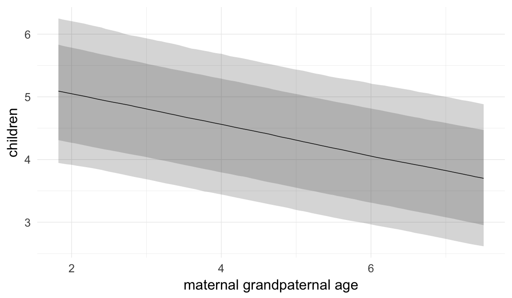
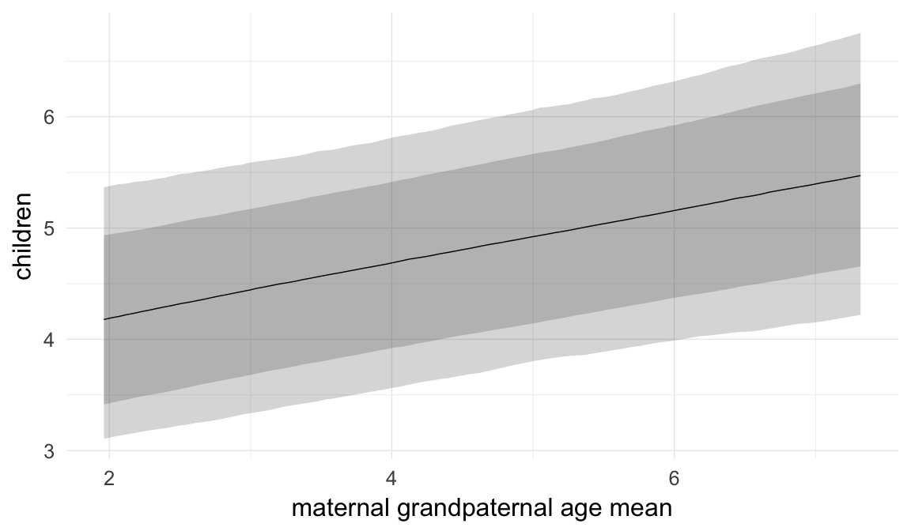
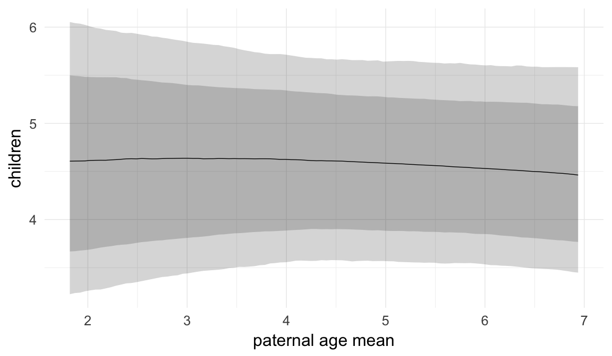
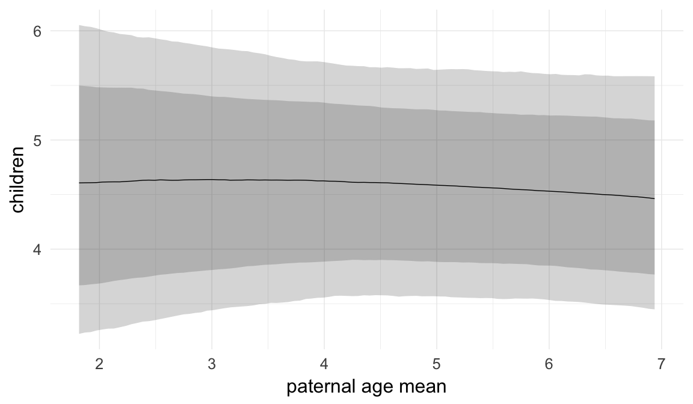
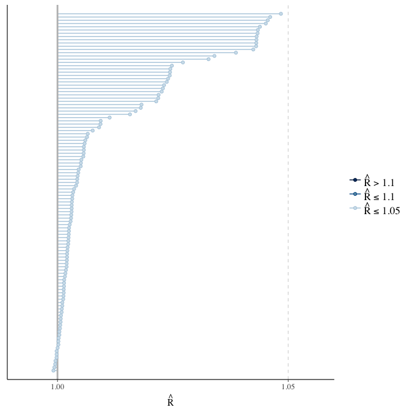
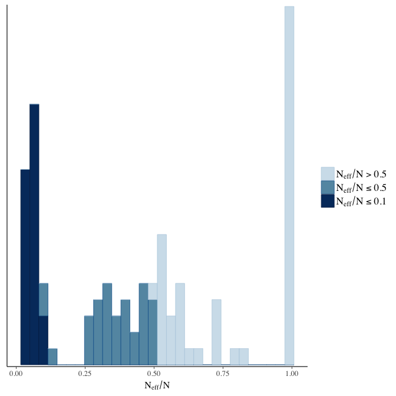

Québec grandpaternal age effects
Loading details
source("0__helpers.R")
opts_chunk$set(warning=TRUE, cache=F,cache.lazy=F,tidy=FALSE,autodep=TRUE,dev=c('png','pdf'),fig.width=20,fig.height=12.5,out.width='1440px',out.height='900px')
make_path = function(file) {
get_coefficient_path(file, "rpqa")
}
# options for each chunk calling knit_child
opts_chunk$set(warning=FALSE, message = FALSE, echo = FALSE)Analysis description
Data subset
The rpqa.1 dataset contains only those participants where paternal age is known and the birthdate is between 1630 and 1750.
g1: Grandpaternal age effects
Here, we tested whether the age of the paternal and maternal grandfather also predict anchor reproductive success over and above paternal age effects. We extended our main model, by adding two additional random effects (for maternal and paternal grandparents, in effect grouping cousins) and four fixed effects: one for each grandfather’s average age at the birth of his children and one for each grandfather’s age at the birth of the respective parent.
Model summary
Full summary
model_summary = summary(model, use_cache = FALSE, priors = TRUE)
print(model_summary)## Family: hurdle_poisson (log)
## Formula: children ~ paternalage + maternal.grandpaternalage + paternal.grandpaternalage + maternal.grandpaternalage.mean + paternal.grandpaternalage.mean + birth_cohort + male + maternalage.factor + paternalage.mean + paternal_loss + maternal_loss + older_siblings + nr.siblings + last_born + (1 | idParents) + (1 | idPaternalGrandparents) + (1 | idMaternalGrandparents)
## hu ~ paternalage + maternal.grandpaternalage + paternal.grandpaternalage + maternal.grandpaternalage.mean + paternal.grandpaternalage.mean + birth_cohort + male + maternalage.factor + paternalage.mean + paternal_loss + maternal_loss + older_siblings + nr.siblings + last_born + (1 | idParents) + (1 | idPaternalGrandparents) + (1 | idMaternalGrandparents)
## Data: model_data (Number of observations: 44332)
## Samples: 6 chains, each with iter = 800; warmup = 300; thin = 1;
## total post-warmup samples = 3000
## WAIC: Not computed
##
## Priors:
## b ~ normal(0,5)
## sd ~ student_t(3, 0, 5)
## b_hu ~ normal(0,5)
## sd_hu ~ student_t(3, 0, 10)
##
## Group-Level Effects:
## ~idMaternalGrandparents (Number of levels: 3776)
## Estimate Est.Error l-95% CI u-95% CI Eff.Sample Rhat
## sd(Intercept) 0.09 0.01 0.07 0.11 190 1.03
## sd(hu_Intercept) 0.35 0.02 0.30 0.40 324 1.01
##
## ~idParents (Number of levels: 7887)
## Estimate Est.Error l-95% CI u-95% CI Eff.Sample Rhat
## sd(Intercept) 0.24 0.01 0.23 0.25 250 1.05
## sd(hu_Intercept) 0.37 0.03 0.30 0.43 260 1.02
##
## ~idPaternalGrandparents (Number of levels: 3541)
## Estimate Est.Error l-95% CI u-95% CI Eff.Sample Rhat
## sd(Intercept) 0.09 0.01 0.06 0.11 130 1.05
## sd(hu_Intercept) 0.31 0.03 0.26 0.36 357 1.02
##
## Population-Level Effects:
## Estimate Est.Error l-95% CI u-95% CI
## Intercept 2.17 0.08 2.03 2.33
## paternalage 0.02 0.01 -0.01 0.05
## maternal.grandpaternalage -0.01 0.01 -0.03 0.01
## paternal.grandpaternalage -0.03 0.01 -0.04 -0.01
## maternal.grandpaternalage.mean 0.01 0.01 -0.01 0.03
## paternal.grandpaternalage.mean 0.03 0.01 0.01 0.05
## birth_cohort1675M1680 -0.04 0.07 -0.18 0.10
## birth_cohort1680M1685 0.04 0.07 -0.09 0.17
## birth_cohort1685M1690 0.12 0.07 -0.02 0.24
## birth_cohort1690M1695 0.08 0.06 -0.05 0.20
## birth_cohort1695M1700 0.05 0.06 -0.08 0.18
## birth_cohort1700M1705 0.05 0.06 -0.09 0.17
## birth_cohort1705M1710 0.03 0.06 -0.10 0.15
## birth_cohort1710M1715 0.03 0.06 -0.10 0.15
## birth_cohort1715M1720 0.00 0.06 -0.13 0.13
## birth_cohort1720M1725 -0.01 0.06 -0.14 0.11
## birth_cohort1725M1730 -0.02 0.06 -0.16 0.10
## birth_cohort1730M1735 -0.01 0.06 -0.14 0.11
## birth_cohort1735M1740 -0.02 0.06 -0.15 0.10
## male1 0.11 0.01 0.10 0.12
## maternalage.factor1420 0.00 0.01 -0.02 0.03
## maternalage.factor3550 -0.02 0.01 -0.04 0.01
## paternalage.mean -0.06 0.02 -0.09 -0.03
## paternal_loss01 -0.04 0.03 -0.09 0.01
## paternal_loss15 -0.03 0.02 -0.07 0.01
## paternal_loss510 -0.01 0.02 -0.04 0.03
## paternal_loss1015 -0.02 0.02 -0.05 0.01
## paternal_loss1520 -0.02 0.01 -0.05 0.01
## paternal_loss2025 -0.01 0.01 -0.03 0.02
## paternal_loss2530 -0.02 0.01 -0.04 0.01
## paternal_loss3035 -0.02 0.01 -0.05 0.00
## paternal_loss3540 -0.04 0.01 -0.06 -0.01
## paternal_loss4045 -0.01 0.01 -0.03 0.01
## paternal_lossunclear -0.03 0.02 -0.06 0.00
## maternal_loss01 -0.03 0.03 -0.09 0.02
## maternal_loss15 -0.05 0.02 -0.09 -0.01
## maternal_loss510 -0.01 0.02 -0.04 0.02
## maternal_loss1015 -0.02 0.02 -0.05 0.01
## maternal_loss1520 0.01 0.01 -0.02 0.04
## maternal_loss2025 -0.02 0.01 -0.05 0.01
## maternal_loss2530 -0.03 0.01 -0.05 0.00
## maternal_loss3035 -0.01 0.01 -0.03 0.01
## maternal_loss3540 0.01 0.01 -0.02 0.03
## maternal_loss4045 0.01 0.01 -0.01 0.03
## maternal_lossunclear -0.06 0.02 -0.09 -0.02
## older_siblings1 -0.03 0.01 -0.05 -0.01
## older_siblings2 -0.03 0.01 -0.05 -0.01
## older_siblings3 -0.04 0.01 -0.07 -0.02
## older_siblings4 -0.02 0.01 -0.05 0.00
## older_siblings5P -0.05 0.02 -0.08 -0.01
## nr.siblings 0.01 0.00 0.00 0.01
## last_born1 0.00 0.01 -0.02 0.02
## hu_Intercept -0.47 0.28 -1.03 0.09
## hu_paternalage 0.16 0.05 0.06 0.26
## hu_maternal.grandpaternalage 0.10 0.02 0.05 0.15
## hu_paternal.grandpaternalage 0.10 0.03 0.05 0.15
## hu_maternal.grandpaternalage.mean -0.10 0.03 -0.16 -0.04
## hu_paternal.grandpaternalage.mean -0.12 0.03 -0.18 -0.06
## hu_birth_cohort1675M1680 -0.21 0.31 -0.82 0.37
## hu_birth_cohort1680M1685 -0.15 0.28 -0.69 0.38
## hu_birth_cohort1685M1690 0.10 0.26 -0.42 0.62
## hu_birth_cohort1690M1695 -0.19 0.25 -0.68 0.29
## hu_birth_cohort1695M1700 -0.20 0.25 -0.70 0.28
## hu_birth_cohort1700M1705 -0.04 0.25 -0.53 0.45
## hu_birth_cohort1705M1710 -0.17 0.25 -0.66 0.32
## hu_birth_cohort1710M1715 0.10 0.25 -0.39 0.59
## hu_birth_cohort1715M1720 -0.08 0.25 -0.57 0.41
## hu_birth_cohort1720M1725 -0.03 0.25 -0.52 0.45
## hu_birth_cohort1725M1730 0.36 0.25 -0.13 0.84
## hu_birth_cohort1730M1735 0.40 0.25 -0.09 0.89
## hu_birth_cohort1735M1740 0.25 0.25 -0.24 0.73
## hu_male1 0.39 0.02 0.35 0.43
## hu_maternalage.factor1420 0.01 0.05 -0.09 0.11
## hu_maternalage.factor3550 0.03 0.04 -0.04 0.11
## hu_paternalage.mean -0.14 0.05 -0.25 -0.04
## hu_paternal_loss01 0.50 0.09 0.33 0.67
## hu_paternal_loss15 0.22 0.07 0.09 0.36
## hu_paternal_loss510 0.21 0.06 0.10 0.33
## hu_paternal_loss1015 0.10 0.05 0.00 0.21
## hu_paternal_loss1520 0.18 0.05 0.08 0.28
## hu_paternal_loss2025 0.16 0.05 0.07 0.25
## hu_paternal_loss2530 0.12 0.05 0.03 0.20
## hu_paternal_loss3035 0.08 0.04 0.00 0.17
## hu_paternal_loss3540 0.08 0.04 -0.01 0.16
## hu_paternal_loss4045 0.00 0.05 -0.09 0.09
## hu_paternal_lossunclear 0.24 0.05 0.14 0.33
## hu_maternal_loss01 1.05 0.09 0.87 1.22
## hu_maternal_loss15 0.38 0.06 0.26 0.50
## hu_maternal_loss510 0.24 0.05 0.14 0.34
## hu_maternal_loss1015 0.20 0.05 0.10 0.30
## hu_maternal_loss1520 0.20 0.05 0.10 0.30
## hu_maternal_loss2025 0.11 0.05 0.01 0.20
## hu_maternal_loss2530 0.03 0.05 -0.07 0.12
## hu_maternal_loss3035 0.08 0.04 0.00 0.17
## hu_maternal_loss3540 0.08 0.04 0.01 0.16
## hu_maternal_loss4045 -0.04 0.04 -0.12 0.04
## hu_maternal_lossunclear 0.13 0.05 0.04 0.21
## hu_older_siblings1 -0.08 0.04 -0.16 -0.01
## hu_older_siblings2 -0.14 0.04 -0.22 -0.06
## hu_older_siblings3 -0.22 0.05 -0.31 -0.13
## hu_older_siblings4 -0.17 0.05 -0.28 -0.07
## hu_older_siblings5P -0.30 0.06 -0.42 -0.17
## hu_nr.siblings 0.02 0.01 0.01 0.03
## hu_last_born1 -0.01 0.04 -0.09 0.06
## Eff.Sample Rhat
## Intercept 192 1.03
## paternalage 757 1.01
## maternal.grandpaternalage 1467 1.00
## paternal.grandpaternalage 1554 1.00
## maternal.grandpaternalage.mean 1604 1.00
## paternal.grandpaternalage.mean 1844 1.00
## birth_cohort1675M1680 232 1.02
## birth_cohort1680M1685 162 1.03
## birth_cohort1685M1690 138 1.04
## birth_cohort1690M1695 128 1.05
## birth_cohort1695M1700 127 1.05
## birth_cohort1700M1705 127 1.04
## birth_cohort1705M1710 127 1.04
## birth_cohort1710M1715 127 1.04
## birth_cohort1715M1720 129 1.04
## birth_cohort1720M1725 129 1.04
## birth_cohort1725M1730 129 1.04
## birth_cohort1730M1735 130 1.04
## birth_cohort1735M1740 129 1.04
## male1 3000 1.00
## maternalage.factor1420 3000 1.00
## maternalage.factor3550 3000 1.00
## paternalage.mean 939 1.01
## paternal_loss01 1343 1.01
## paternal_loss15 1075 1.01
## paternal_loss510 909 1.00
## paternal_loss1015 848 1.01
## paternal_loss1520 879 1.00
## paternal_loss2025 981 1.01
## paternal_loss2530 840 1.01
## paternal_loss3035 1062 1.00
## paternal_loss3540 1591 1.00
## paternal_loss4045 1668 1.00
## paternal_lossunclear 1294 1.01
## maternal_loss01 3000 1.00
## maternal_loss15 1610 1.00
## maternal_loss510 1466 1.01
## maternal_loss1015 1506 1.01
## maternal_loss1520 1625 1.00
## maternal_loss2025 1801 1.00
## maternal_loss2530 1682 1.00
## maternal_loss3035 1774 1.00
## maternal_loss3540 3000 1.00
## maternal_loss4045 3000 1.00
## maternal_lossunclear 1558 1.00
## older_siblings1 3000 1.00
## older_siblings2 1747 1.00
## older_siblings3 1441 1.00
## older_siblings4 1161 1.00
## older_siblings5P 1000 1.00
## nr.siblings 1831 1.00
## last_born1 3000 1.00
## hu_Intercept 235 1.02
## hu_paternalage 954 1.01
## hu_maternal.grandpaternalage 1605 1.00
## hu_paternal.grandpaternalage 1777 1.00
## hu_maternal.grandpaternalage.mean 1462 1.00
## hu_paternal.grandpaternalage.mean 1593 1.00
## hu_birth_cohort1675M1680 324 1.01
## hu_birth_cohort1680M1685 252 1.02
## hu_birth_cohort1685M1690 216 1.02
## hu_birth_cohort1690M1695 207 1.02
## hu_birth_cohort1695M1700 198 1.02
## hu_birth_cohort1700M1705 197 1.02
## hu_birth_cohort1705M1710 195 1.02
## hu_birth_cohort1710M1715 195 1.02
## hu_birth_cohort1715M1720 196 1.02
## hu_birth_cohort1720M1725 195 1.02
## hu_birth_cohort1725M1730 193 1.02
## hu_birth_cohort1730M1735 191 1.02
## hu_birth_cohort1735M1740 192 1.02
## hu_male1 3000 1.00
## hu_maternalage.factor1420 3000 1.00
## hu_maternalage.factor3550 2346 1.00
## hu_paternalage.mean 1301 1.00
## hu_paternal_loss01 3000 1.00
## hu_paternal_loss15 3000 1.00
## hu_paternal_loss510 1411 1.00
## hu_paternal_loss1015 1400 1.00
## hu_paternal_loss1520 1187 1.00
## hu_paternal_loss2025 1422 1.00
## hu_paternal_loss2530 1008 1.00
## hu_paternal_loss3035 1093 1.01
## hu_paternal_loss3540 1410 1.01
## hu_paternal_loss4045 3000 1.00
## hu_paternal_lossunclear 1160 1.01
## hu_maternal_loss01 2211 1.00
## hu_maternal_loss15 2138 1.00
## hu_maternal_loss510 3000 1.00
## hu_maternal_loss1015 2131 1.00
## hu_maternal_loss1520 3000 1.00
## hu_maternal_loss2025 2472 1.00
## hu_maternal_loss2530 3000 1.00
## hu_maternal_loss3035 3000 1.00
## hu_maternal_loss3540 3000 1.00
## hu_maternal_loss4045 3000 1.00
## hu_maternal_lossunclear 3000 1.00
## hu_older_siblings1 3000 1.00
## hu_older_siblings2 1978 1.00
## hu_older_siblings3 1657 1.00
## hu_older_siblings4 1223 1.00
## hu_older_siblings5P 1040 1.00
## hu_nr.siblings 2182 1.00
## hu_last_born1 3000 1.00
##
## Samples were drawn using sampling(NUTS). For each parameter, Eff.Sample
## is a crude measure of effective sample size, and Rhat is the potential
## scale reduction factor on split chains (at convergence, Rhat = 1).Table of fixed effects
fixed_eff = data.frame(model_summary$fixed, check.names = F)
fixed_eff$Est.Error = fixed_eff$Eff.Sample = fixed_eff$Rhat = NULL
fixed_eff$OR = exp(fixed_eff$Estimate)
fixed_eff$OR_low = exp(fixed_eff$`l-95% CI`)
fixed_eff$OR_high = exp(fixed_eff$`u-95% CI`)
pander::pander(fixed_eff)| Estimate | l-95% CI | u-95% CI | OR | OR_low | OR_high | |
|---|---|---|---|---|---|---|
| Intercept | 2.171 | 2.027 | 2.334 | 8.769 | 7.592 | 10.32 |
| paternalage | 0.01794 | -0.009307 | 0.04622 | 1.018 | 0.9907 | 1.047 |
| maternal.grandpaternalage | -0.00998 | -0.02656 | 0.007259 | 0.9901 | 0.9738 | 1.007 |
| paternal.grandpaternalage | -0.02866 | -0.04488 | -0.01133 | 0.9717 | 0.9561 | 0.9887 |
| maternal.grandpaternalage.mean | 0.01072 | -0.01126 | 0.03103 | 1.011 | 0.9888 | 1.032 |
| paternal.grandpaternalage.mean | 0.02999 | 0.009566 | 0.05031 | 1.03 | 1.01 | 1.052 |
| birth_cohort1675M1680 | -0.0371 | -0.1781 | 0.1024 | 0.9636 | 0.8368 | 1.108 |
| birth_cohort1680M1685 | 0.04491 | -0.0943 | 0.1743 | 1.046 | 0.91 | 1.19 |
| birth_cohort1685M1690 | 0.1164 | -0.01659 | 0.2425 | 1.123 | 0.9836 | 1.274 |
| birth_cohort1690M1695 | 0.08155 | -0.05395 | 0.2046 | 1.085 | 0.9475 | 1.227 |
| birth_cohort1695M1700 | 0.05467 | -0.07635 | 0.1758 | 1.056 | 0.9265 | 1.192 |
| birth_cohort1700M1705 | 0.04673 | -0.08541 | 0.1669 | 1.048 | 0.9181 | 1.182 |
| birth_cohort1705M1710 | 0.02841 | -0.1026 | 0.1494 | 1.029 | 0.9025 | 1.161 |
| birth_cohort1710M1715 | 0.02829 | -0.1026 | 0.1504 | 1.029 | 0.9025 | 1.162 |
| birth_cohort1715M1720 | 0.003655 | -0.1266 | 0.1263 | 1.004 | 0.8811 | 1.135 |
| birth_cohort1720M1725 | -0.009743 | -0.1411 | 0.1134 | 0.9903 | 0.8684 | 1.12 |
| birth_cohort1725M1730 | -0.02469 | -0.1561 | 0.09736 | 0.9756 | 0.8555 | 1.102 |
| birth_cohort1730M1735 | -0.006625 | -0.138 | 0.1141 | 0.9934 | 0.8711 | 1.121 |
| birth_cohort1735M1740 | -0.02126 | -0.1514 | 0.1 | 0.979 | 0.8595 | 1.105 |
| male1 | 0.1133 | 0.1033 | 0.1234 | 1.12 | 1.109 | 1.131 |
| maternalage.factor1420 | 0.003933 | -0.01957 | 0.02905 | 1.004 | 0.9806 | 1.029 |
| maternalage.factor3550 | -0.01577 | -0.03689 | 0.005116 | 0.9844 | 0.9638 | 1.005 |
| paternalage.mean | -0.06218 | -0.09406 | -0.03252 | 0.9397 | 0.9102 | 0.968 |
| paternal_loss01 | -0.04043 | -0.09209 | 0.0106 | 0.9604 | 0.912 | 1.011 |
| paternal_loss15 | -0.03103 | -0.07087 | 0.008055 | 0.9694 | 0.9316 | 1.008 |
| paternal_loss510 | -0.007217 | -0.04014 | 0.02736 | 0.9928 | 0.9607 | 1.028 |
| paternal_loss1015 | -0.02144 | -0.05202 | 0.009663 | 0.9788 | 0.9493 | 1.01 |
| paternal_loss1520 | -0.02012 | -0.04981 | 0.008252 | 0.9801 | 0.9514 | 1.008 |
| paternal_loss2025 | -0.006649 | -0.0336 | 0.02083 | 0.9934 | 0.967 | 1.021 |
| paternal_loss2530 | -0.01695 | -0.0418 | 0.007476 | 0.9832 | 0.9591 | 1.008 |
| paternal_loss3035 | -0.02283 | -0.04703 | 0.0009302 | 0.9774 | 0.9541 | 1.001 |
| paternal_loss3540 | -0.03502 | -0.05703 | -0.01413 | 0.9656 | 0.9446 | 0.986 |
| paternal_loss4045 | -0.01226 | -0.03329 | 0.01018 | 0.9878 | 0.9673 | 1.01 |
| paternal_lossunclear | -0.03162 | -0.0638 | -0.0008117 | 0.9689 | 0.9382 | 0.9992 |
| maternal_loss01 | -0.03462 | -0.09167 | 0.02109 | 0.966 | 0.9124 | 1.021 |
| maternal_loss15 | -0.04759 | -0.0854 | -0.00995 | 0.9535 | 0.9181 | 0.9901 |
| maternal_loss510 | -0.007599 | -0.03961 | 0.02467 | 0.9924 | 0.9612 | 1.025 |
| maternal_loss1015 | -0.01998 | -0.05109 | 0.009785 | 0.9802 | 0.9502 | 1.01 |
| maternal_loss1520 | 0.01316 | -0.01667 | 0.04082 | 1.013 | 0.9835 | 1.042 |
| maternal_loss2025 | -0.01871 | -0.04642 | 0.008357 | 0.9815 | 0.9546 | 1.008 |
| maternal_loss2530 | -0.02622 | -0.05194 | -0.0008458 | 0.9741 | 0.9494 | 0.9992 |
| maternal_loss3035 | -0.01011 | -0.03276 | 0.01327 | 0.9899 | 0.9678 | 1.013 |
| maternal_loss3540 | 0.005405 | -0.0153 | 0.02727 | 1.005 | 0.9848 | 1.028 |
| maternal_loss4045 | 0.01109 | -0.01067 | 0.03229 | 1.011 | 0.9894 | 1.033 |
| maternal_lossunclear | -0.05662 | -0.08845 | -0.0243 | 0.945 | 0.9153 | 0.976 |
| older_siblings1 | -0.02675 | -0.04519 | -0.007939 | 0.9736 | 0.9558 | 0.9921 |
| older_siblings2 | -0.03292 | -0.05476 | -0.01188 | 0.9676 | 0.9467 | 0.9882 |
| older_siblings3 | -0.04389 | -0.06795 | -0.02074 | 0.9571 | 0.9343 | 0.9795 |
| older_siblings4 | -0.02394 | -0.05167 | 0.003565 | 0.9763 | 0.9496 | 1.004 |
| older_siblings5P | -0.04755 | -0.08179 | -0.0141 | 0.9536 | 0.9215 | 0.986 |
| nr.siblings | 0.007691 | 0.004563 | 0.01095 | 1.008 | 1.005 | 1.011 |
| last_born1 | 0.001142 | -0.01905 | 0.02099 | 1.001 | 0.9811 | 1.021 |
| hu_Intercept | -0.4702 | -1.026 | 0.0881 | 0.6249 | 0.3586 | 1.092 |
| hu_paternalage | 0.1598 | 0.06236 | 0.2592 | 1.173 | 1.064 | 1.296 |
| hu_maternal.grandpaternalage | 0.1021 | 0.05339 | 0.1494 | 1.107 | 1.055 | 1.161 |
| hu_paternal.grandpaternalage | 0.09769 | 0.04784 | 0.1471 | 1.103 | 1.049 | 1.158 |
| hu_maternal.grandpaternalage.mean | -0.09727 | -0.1576 | -0.03739 | 0.9073 | 0.8542 | 0.9633 |
| hu_paternal.grandpaternalage.mean | -0.1201 | -0.1803 | -0.0597 | 0.8868 | 0.835 | 0.9421 |
| hu_birth_cohort1675M1680 | -0.2101 | -0.8199 | 0.3709 | 0.8105 | 0.4405 | 1.449 |
| hu_birth_cohort1680M1685 | -0.154 | -0.6927 | 0.3838 | 0.8573 | 0.5002 | 1.468 |
| hu_birth_cohort1685M1690 | 0.1021 | -0.4178 | 0.6197 | 1.107 | 0.6585 | 1.858 |
| hu_birth_cohort1690M1695 | -0.1918 | -0.6831 | 0.2949 | 0.8255 | 0.5051 | 1.343 |
| hu_birth_cohort1695M1700 | -0.2019 | -0.696 | 0.2837 | 0.8172 | 0.4986 | 1.328 |
| hu_birth_cohort1700M1705 | -0.03889 | -0.5315 | 0.4486 | 0.9619 | 0.5877 | 1.566 |
| hu_birth_cohort1705M1710 | -0.1681 | -0.6605 | 0.3229 | 0.8452 | 0.5166 | 1.381 |
| hu_birth_cohort1710M1715 | 0.1005 | -0.3885 | 0.5929 | 1.106 | 0.6781 | 1.809 |
| hu_birth_cohort1715M1720 | -0.08005 | -0.5659 | 0.413 | 0.9231 | 0.5678 | 1.511 |
| hu_birth_cohort1720M1725 | -0.03103 | -0.5227 | 0.4459 | 0.9694 | 0.5929 | 1.562 |
| hu_birth_cohort1725M1730 | 0.3588 | -0.1289 | 0.8369 | 1.432 | 0.879 | 2.309 |
| hu_birth_cohort1730M1735 | 0.404 | -0.09007 | 0.8861 | 1.498 | 0.9139 | 2.426 |
| hu_birth_cohort1735M1740 | 0.2492 | -0.2403 | 0.7322 | 1.283 | 0.7864 | 2.08 |
| hu_male1 | 0.3904 | 0.3487 | 0.4314 | 1.478 | 1.417 | 1.539 |
| hu_maternalage.factor1420 | 0.01065 | -0.0891 | 0.1059 | 1.011 | 0.9148 | 1.112 |
| hu_maternalage.factor3550 | 0.0345 | -0.03922 | 0.1111 | 1.035 | 0.9615 | 1.118 |
| hu_paternalage.mean | -0.1405 | -0.2457 | -0.03658 | 0.8689 | 0.7822 | 0.9641 |
| hu_paternal_loss01 | 0.5016 | 0.326 | 0.674 | 1.651 | 1.385 | 1.962 |
| hu_paternal_loss15 | 0.2222 | 0.08603 | 0.357 | 1.249 | 1.09 | 1.429 |
| hu_paternal_loss510 | 0.2144 | 0.09635 | 0.3321 | 1.239 | 1.101 | 1.394 |
| hu_paternal_loss1015 | 0.1037 | -0.002636 | 0.2111 | 1.109 | 0.9974 | 1.235 |
| hu_paternal_loss1520 | 0.1776 | 0.07877 | 0.2768 | 1.194 | 1.082 | 1.319 |
| hu_paternal_loss2025 | 0.1614 | 0.07245 | 0.2519 | 1.175 | 1.075 | 1.286 |
| hu_paternal_loss2530 | 0.1189 | 0.02947 | 0.2044 | 1.126 | 1.03 | 1.227 |
| hu_paternal_loss3035 | 0.08405 | -0.002669 | 0.1686 | 1.088 | 0.9973 | 1.184 |
| hu_paternal_loss3540 | 0.07707 | -0.008123 | 0.1633 | 1.08 | 0.9919 | 1.177 |
| hu_paternal_loss4045 | -0.0005257 | -0.08721 | 0.09099 | 0.9995 | 0.9165 | 1.095 |
| hu_paternal_lossunclear | 0.2368 | 0.1425 | 0.3304 | 1.267 | 1.153 | 1.392 |
| hu_maternal_loss01 | 1.047 | 0.8742 | 1.223 | 2.85 | 2.397 | 3.397 |
| hu_maternal_loss15 | 0.383 | 0.2595 | 0.4991 | 1.467 | 1.296 | 1.647 |
| hu_maternal_loss510 | 0.2385 | 0.1379 | 0.3415 | 1.269 | 1.148 | 1.407 |
| hu_maternal_loss1015 | 0.2003 | 0.09525 | 0.3021 | 1.222 | 1.1 | 1.353 |
| hu_maternal_loss1520 | 0.2011 | 0.09823 | 0.299 | 1.223 | 1.103 | 1.349 |
| hu_maternal_loss2025 | 0.1086 | 0.0126 | 0.2006 | 1.115 | 1.013 | 1.222 |
| hu_maternal_loss2530 | 0.02774 | -0.06596 | 0.1167 | 1.028 | 0.9362 | 1.124 |
| hu_maternal_loss3035 | 0.08426 | -0.0005678 | 0.1677 | 1.088 | 0.9994 | 1.183 |
| hu_maternal_loss3540 | 0.08143 | 0.007873 | 0.1563 | 1.085 | 1.008 | 1.169 |
| hu_maternal_loss4045 | -0.03882 | -0.1206 | 0.03976 | 0.9619 | 0.8863 | 1.041 |
| hu_maternal_lossunclear | 0.1255 | 0.03547 | 0.214 | 1.134 | 1.036 | 1.239 |
| hu_older_siblings1 | -0.08275 | -0.1579 | -0.007581 | 0.9206 | 0.854 | 0.9924 |
| hu_older_siblings2 | -0.1398 | -0.224 | -0.05875 | 0.8695 | 0.7993 | 0.9429 |
| hu_older_siblings3 | -0.2184 | -0.3119 | -0.1251 | 0.8038 | 0.732 | 0.8824 |
| hu_older_siblings4 | -0.1726 | -0.2776 | -0.0703 | 0.8415 | 0.7576 | 0.9321 |
| hu_older_siblings5P | -0.2955 | -0.4208 | -0.1721 | 0.7442 | 0.6565 | 0.8419 |
| hu_nr.siblings | 0.02404 | 0.014 | 0.0338 | 1.024 | 1.014 | 1.034 |
| hu_last_born1 | -0.01484 | -0.09235 | 0.05913 | 0.9853 | 0.9118 | 1.061 |
Paternal age effect
pander::pander(paternal_age_10y_effect(model))| effect | median_estimate | ci_95 | ci_80 |
|---|---|---|---|
| estimate father 25y | 4.86 | [3.8;5.95] | [4.13;5.59] |
| estimate father 35y | 4.65 | [3.53;5.78] | [3.88;5.38] |
| percentage change | -4.57 | [-10.1;0.43] | [-8.1;-1.33] |
| OR/IRR | 1.02 | [0.99;1.05] | [1;1.04] |
| OR hurdle | 1.17 | [1.06;1.3] | [1.1;1.25] |
Marginal effect plots
plot.brmsMarginalEffects_shades(
x = marginal_effects(model, re_formula = NA, probs = c(0.025,0.975)),
y = marginal_effects(model, re_formula = NA, probs = c(0.1,0.9)),
ask = FALSE) 

Coefficient plot
Coefficient estimates (95% and 80% credibility).
mcmc_intervals(as.matrix(model$fit), regex_pars = "b_[^I]")mcmc_areas(as.matrix(model$fit), regex_pars = "b")Diagnostics
These plots were made to diagnose misfit and nonconvergence.
Posterior predictive checks
brms::pp_check(model, re_formula = NA, type = "dens_overlay")brms::pp_check(model, re_formula = NA, type = "hist")Rhat
Did the 6 chains converge?
stanplot(model, pars = "^b_[^I]", type = 'rhat')
Effective sample size by average sample size
stanplot(model, pars = "^b", type = 'ess')
Monte Carlo SE
stanplot(model, pars = "^b", type = 'mcse')Trace plots
if(any( summary(model)$fixed[,"Rhat"] > 1.1)) { # only do traceplots if not converged
plot(model, N = 3, ask = FALSE)
}Further plots
stanplot(model, pars = "^b", type = 'diag')File name
coefs/rpqa/g1_grandpaternal_age_effects.rds
Cluster script
opts_chunk$set(echo = FALSE)
clusterscript = str_replace(basename(model_filename), "\\.rds",".html")
cat("[Cluster script](" , clusterscript, ")", sep = "")Grandpaternal age effects
Maternal grandfather
| effect | median_estimate | ci_95 | ci_80 |
|---|---|---|---|
| estimate father 25y | 4.95 | [3.83;6.09] | [4.17;5.67] |
| estimate father 35y | 4.7 | [3.59;5.82] | [3.94;5.43] |
| percentage change | -5.01 | [-7.78;-2.47] | [-6.86;-3.28] |
| OR/IRR | 0.99 | [0.97;1.01] | [0.98;1] |
| OR hurdle | 1.11 | [1.05;1.16] | [1.07;1.14] |
Paternal grandfather
| effect | median_estimate | ci_95 | ci_80 |
|---|---|---|---|
| estimate father 25y | 5.05 | [3.91;6.21] | [4.25;5.79] |
| estimate father 35y | 4.71 | [3.59;5.83] | [3.95;5.44] |
| percentage change | -6.61 | [-9.44;-4.02] | [-8.4;-4.9] |
| OR/IRR | 0.97 | [0.96;0.99] | [0.96;0.98] |
| OR hurdle | 1.1 | [1.05;1.16] | [1.07;1.14] |